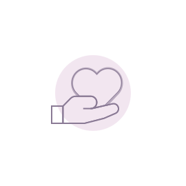
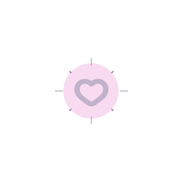

{%load static%}
<!DOCTYPE html>
<html lang="ko">
<head>
  <meta charset="UTF-8" />
  <meta name="viewport" content="width=device-width, initial-scale=1.0" />
  <title>SujeongBridge</title>
  <link rel="stylesheet" href="{%static 'css/home.css' %}">
</head>

<body>
  <header class="main-header">
    <div class="logo">
        <a href="{%url "home:home"%}">
            </a>
    </div>
    <nav class="main-nav">
      <ul class="main-nav-links">
        <li><a href="{% url 'experience:review_list' %}">활동 후기</a></li>
        <li><a href="{%url "jobTips:list"%}">자소서·면접·포폴</a></li>
        <li><a href="{%url "recruit:recruit_list"%}">모집</a></li>
        <li><a href="{%url "career:roadmap_home"%}">나의 로드맵</a></li>
      </ul>
    </nav>
    <div class="main-header-r">
      <a href="{%url "mypage:home"%}"><button class="header-mypage-btn" >마이페이지</button></a>
      {% if user.is_authenticated %}
        <a href="{%url "accounts:logout"%}"><button class="header-login-btn">로그아웃</button></a>
      {% else %}
        <a href="{%url "accounts:login"%}"><button class="header-login-btn">로그인</button></a>
      {% endif %}
    </div>
  </header>

  <main class="fullpage">
    <section class="section main">
      <div class="bridge-heartbeat-wrap" aria-hidden="true">
      <svg class="bridge-heartbeat-svg" viewBox="0 0 900 140" preserveAspectRatio="none">
        <defs>
          <linearGradient id="bridgeGradient" x1="0%" y1="0%" x2="100%" y2="0%">
            <stop offset="0%" stop-color="#6b4c7d"/>
            <stop offset="50%" stop-color="#9e8caa"/>
            <stop offset="100%" stop-color="#f2b6d4"/>
          </linearGradient>
        </defs>

        <path class="bridge-heartbeat-path"
          d="M0 70 
            L120 70 
            C150 70, 160 40, 180 40 
            C200 40, 210 100, 230 100
            C250 100, 260 70, 280 70
            L380 70
            C420 70, 440 20, 470 20
            C500 20, 520 120, 550 120
            C580 120, 600 70, 620 70
            L900 70"
          fill="none"
          stroke="url(#bridgeGradient)"
          stroke-width="3"
          stroke-linecap="round"
          stroke-linejoin="round"
        />
      </svg>

      <div class="bridge-heartbeat-text">
        <div class="bridge-heartbeat-title">Sujeong Bridge</div>
        <div class="bridge-heartbeat-sub">기록된 경험이 연결이 되다</div>
      </div>
    </div>
    </section>

    <section class="section about">
      <div class="about-bridge-wrap">
        
      </div>
      <div class="about-top">수정 브릿지는 경험을 기록하고, <br>
        그 경험을 바탕으로 사람을 연결하는<br>
        우리 학교 진로 가이드 아카이브입니다.
      </div>
      <div class="about-mid-top">
        흩어져 있던 정보를 한 곳에 모아 <br>
        신뢰도 높은 진로 가이드를 제공합니다.
      </div>
      <div class="about-mid-bottom">
        단순한 정보 공유를 넘어, <br>
        현실적인 진로 설계와 선후배 연결을 목표로 합니다.
      </div>
      <div class="about-bottom">
        <div class="about-ex">
          
          <div class="about-ex-text">
            실제 활동 경험을 <br>
            기록하고 공유하는 공간
          </div>
        </div>
        <div class="about-jobtips">
          
          <div class="about-jobtips-text">
            합격으로 이어진 선배들의 <br>
            준비 과정과 결과를 공유하는 공간
          </div>
        </div>
        <div class="about-recruit">
          
          <div class="about-recruit-text">
            함께 성장할 팀원을 만는<br>
            교내 매칭 공간
          </div>
        </div>
      </div>
    </section>

    <section class="section sub">
      <div class="roadmap-section">
        
        <div class="roadmap-text">
          나의 선택과 경험이 쌓이는 <br>
          나의 로드맵
        </div>
      </div>
      <div class="qna-section">
        
        <div class="qna-text">
          기록된 경험을 바탕으로<br>
          직접 묻고 연결되는 공간
        </div>
      </div>
      <div class="heartbeat-wrap" aria-hidden="true">
        <svg class="heartbeat-svg" viewBox="0 0 900 140" preserveAspectRatio="none" role="img">
          <path class="ecg-path"
            d="M0 70 L90 70 L110 40 L130 100 L150 70 L330 70 L350 55 L370 85 L390 70 L570 70 L590 35 L610 120 L630 70 L900 70"
            fill="none" stroke="var(--purple-dark)" stroke-width="4" stroke-linecap="round" stroke-linejoin="round"/>
        </svg>
      </div>
    </section>
</main>

  <footer class="footer">
    <p>© SSWU_WAGI 3기 CampusBridge</p>
    <p class="member">BACKEND  <br /> FRONTEND </p>
  </footer>
</body>
</html>